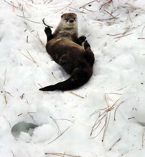
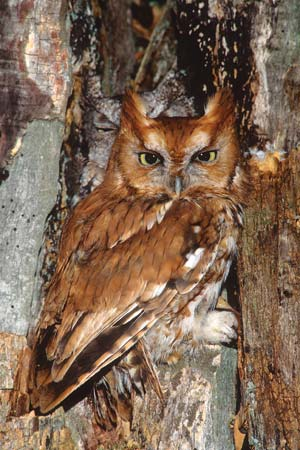
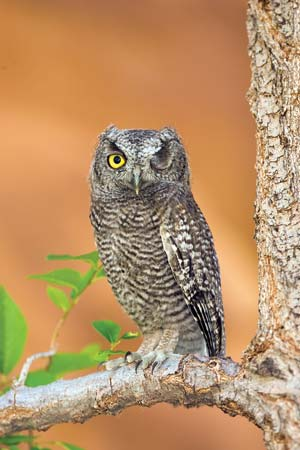
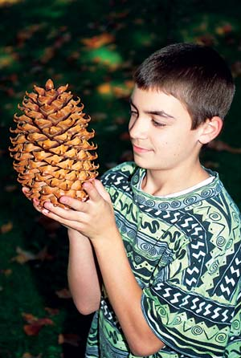

Wild Wonders Of Winter
Prehistoric pine cones, daredevil otters and sleepy bears are only a few of the season’s natural wonders.
By Terry Krautwurst
December 2007/January 2008
OK, it’s true that December and its solstice signal colder temperatures, a barer landscape and harsher weather. But look at it this way instead: The air is crisp and bracing. Leafless trees reveal wildlife and scenic vistas hidden during warmer seasons. And with snow falling or blanketing the landscape, it’s a wonderland out there. In fact, there are stories to discover all around you, in every bur, bud, bug and burrow. Here’s a sampler of items to help you better enjoy nature’s wintry ways.
Super Sliders
It’s not just people that head for the nearest slippery slope when snow falls. Polar bears congregate on favorite hills to slide down on their backs, then get up and do it again - and again. Ravens, too, are back-sliders, and for reasons unknown to mere humans, they like to hold sticks in their beaks as they zoom downhill.
But river otters are the undisputed masters of snow-sliding, and particularly of no-holds-barred, all-out belly flopping. After getting a good running start, an otter flings itself onto its smooth stomach, folds its legs back alongside its sleek body, and rockets downhill using its foot-long tail as a rudder, chattering or barking excitedly to its companions. At the bottom of the slope, the animal does exactly what you and I do … it treks back up for another go.
An otter family will spend hours thus, apparently for no reason other than the fun of it. But otters also slide as a means of practical locomotion across flat territory. On land, like other long-bodied members of the weasel family, the short-legged river otter has an awkward, arch-backed, bounding gait - picture an enormous whiskered inchworm. To save energy and move faster across snow, the otter uses a jump-slide-jump-slide technique, first taking a couple of bounding steps, then coasting on its belly for as much as 20 feet, then taking a few jumping steps again, and so on. An otter’s dot-dot-daaaaaash, dot-dot-daaaaash tracks in snow are unmistakable.
Of course, river otters are most at home in water, where their terrestrial gangliness liquefies into grace and speed. An otter cleaves through water like a pliant kayak, its streamlined body slithering effortlessly, its thick muscular tail providing propulsion, its webbed feet acting as rudders and swim fins. Otters are the fastest land mammal in the water. They eat clams, frogs, turtles, snails, ducklings and almost any other catchable, edible organism. But their favorite fare is fish. Supremely maneuverable, armed with hooklike teeth, and equipped with eyes designed for underwater vision and whiskers that detect the slightest aquatic movements, an otter is a lethal predator. Usually, it can catch its daily 3 to 4 pounds of food in short order.
The result: lots of leisure time and energy for play. Last one down the hill is a rotten clam!
Black Bears Hibernate: True or False?
“False,” declared startled early researchers who’d crawled into the dens of hibernating black bears to take their temperatures - only to discover near-normal readings and irritable bruins all too easily awakened by the insertion of a thermometer into their nether parts. True hibernators, biologists then thought, slept deeply and significantly lowered their body temperature.
But science has since changed its notion of hibernation, which is now defined not in terms of temperature or sleep but simply as a seasonal reduction of metabolism to survive frigid weather and scant food. In that context, overwintering black bears - even though they stir often and may sometimes amble outside their dens on mild days - are among the planet’s champion hibernators.
Starting in late summer, a black bear stocks its winter pantry - its own body - by gorging on nuts, berries and other high-carb foods, gaining as much as 30 pounds a week. In fall, bulked to the max, the bear enters its den, curls up like a cat and begins its winter snooze.
Most hibernators, such as woodchucks and chipmunks, do conserve energy by dropping their body temperature to 40 degrees or lower. Even so, the little calorie-burning creatures must rouse themselves every few days, chow down on stored food, and excrete wastes before returning to a deep sleep. If they didn’t, they’d starve.
But for three months or more, a hibernating black bear - whether sleeping soundly or barely dozing - neither eats, drinks, exercises, urinates or does what bears are otherwise known to do in the woods. Its breathing slows, its heartbeat drops from 40 beats a minute to about 10, its oxygen intake is reduced by half - yet throughout the winter its internal furnace burns at a near-normal temperature of about 88 degrees, just 10 degrees lower than in the summer. It lives entirely off its body, breaking down fat cells to supply water and up to 4,000 calories a day, and recycling the urea it would normally excrete in urine to manufacture protein, essential for maintaining muscle and brain function.
So it is that a fully hibernating black bear, while taking in no energy whatsoever, can sustain itself in comfort all winter - and in the case of a pregnant female, can even give birth and keep her babies nourished and warm. In January, the expectant mother awakes long enough to deliver cubs, then returns to dormancy while the young snuggle against her warm body and nurse.
Dive! Fly! Dive!
With a boat for a body, oars for legs, a built-in scuba tank and wings that can propel it for five miles, a water boatman doesn’t let a little thing like winter slow it down. Water boatmen, which comprise more than 120 species of insects in temperate North America, are busy denizens of ponds, lakes, puddles and other languid bodies of water, even when those bodies are covered by ice. All a boatman needs is a pocket of air from which to periodically refill its breathing apparatus: a bubble trapped beneath its wings or spread over its upper body. With its oxygen supply renewed, the quarter- to half-inch-long bug can dive back down to resume foraging on algae and aquatic plants. Most species are mainly vegetarians, though several also prey on insect larvae.
It’s easy to see where the water boatman gets its name, given its broad oval body and rowing legs. It actually uses only the two pairs of flattened, hair-covered hind legs for swimming; its short spoonlike forelegs are useful for hanging onto underwater plants and for scooping algae and other microscopic organisms into its mouth.
Water boatmen often are confused with backswimmers, a family of similar-looking but larger aquatic bugs. Backswimmers, however, swim upside down and tend to stay on or barely below the surface. The differences are worth noting for wading humans. Although water boatmen are harmless, their back-swimming cousins can inflict a painful bite.
Water boatmen are prodigious egg layers; so much so that a pond’s bottom can become encrusted with countless eggs attached to underwater plants. Periodically, large numbers of adult boatmen take to the air to mate or seek new homes. Those landing in birdbaths and swimming pools are seldom welcome. But in the larger scheme of things, water boatmen are essential gleaners in aquatic ecosystems and an important food source for fish. In parts of Mexico, humans like them, too. The bugs are sold as a delicacy, and their eggs are harvested by the ton and ground into meal.
Screeching East and West
In 1927 ornithologist Edward Howe Forbush wrote about a belief in parts of the Deep South that hearing the quavering, mournful call of a screech owl at night foretold impending death. To quiet the unwanted forecaster, you were to turn your left shoe upside down - and if that didn’t silence the bird’s ominous utterances, you could try pulling your left pants pocket inside out.
These days you can rest assured that the screech owl’s plaintive calls in the woodlot near your house portend a beginning, not an end. Commencing early in the year and reaching a crescendo in late winter, the sounds of screech owls in woodlands, parks and suburbs throughout most of the continental United States signal the onset of the little birds’ breeding season. If you live west of the Rockies, listen for a short, muted trill akin to the cooing of a mourning dove with a bad case of nerves, or a series of five to 15 soft, flutelike notes in increasing tempo, similar to the rhythm of a ping-pong ball bouncing to a stop. East of the Rockies, the screech owl’s territorial and mating calls are different: a distinctive, eerie whinny reminiscent of that from a horse, and a mellow, husky trill.
Once considered geographic races of the same bird, eastern and western screech owls were officially declared separate species in 1983, based not only on their individual vocal repertoires but also on DNA evidence and distinct color variations. Western screech owls are mostly gray or (especially in the Northwest) brownish-gray, while eastern screech owls may be either gray or (particularly in the East and Midwest) rusty red. In most other respects the two are essentially identical. Built like feathery fireplugs, the stocky little birds stand all of 8 1/2 inches tall. They have big yellow eyes, collapsible ear tufts, and a streaked breast that works in concert with their cryptic coloration to help them virtually disappear against a tree trunk.
Its diminutive size notwithstanding, the screech owl is a ferocious and efficient hunter, using its sharp, hooked beak and oversized, razor-taloned feet to bring a swift end to many a mouse, bird, worm and insect. Secretive but tolerant of humans, screech owls often are the most numerous and ecologically important predators in wooded urban and suburban areas.
Pickin' Up Pine Cones
On your next winter hike, pause to pick up a pine cone, and ponder it. In your hand is a sustaining link in a reproductive chain that stretches back some 300 million years - 60 million years before dinosaurs appeared, 150 million years before the first flowering plants. The seed cone was an evolutionary leap forward for primitive plants, whose earlier forms relied on the whims of wind and wet weather to scatter and germinate fragile spores. By the time the dinosaurs arrived, soaring conifers that held their embryos within seeds sheltered inside protective cones dominated high-ground forests.
What kind of pine cone have you found? Of the roughly 35 species of pines in the United States and Canada, most are considered either “hard” or “soft.” If the cone has thin, flexible scales it’s likely from a soft pine - maybe an eastern or western white, a whitebark, or a limber. A cone with thick, rigid scales, perhaps armed with prickly barbs, probably dropped from a hard pine such as a jack, red, lodgepole, longleaf, shortleaf or loblolly.
The largest cones under a given tree are the seed-bearing females. In the mountains of Oregon and California, the world’s longest pine cones - 18 inches to 2 feet - hang from sugar pines. But for sheer mass, even they can’t match the cones of California’s Coulter pine. Measuring 8 to 18 inches long and up to 7 inches across, those cones weigh in at a whopping 4 to 10 pounds when green. “One who seeks the Coulter pine’s shade should wear a hard hat,” naturalists advise.
The seeds within pine cones provide critical nutrition for numerous mammals and birds. Your cone probably already opened and released its seeds, but you can extend its useful life as a winter food source. Take it home, fill its crevices with a mixture of peanut butter and bird seed, and hang it by a ribbon from a tree limb.
|
 ISTOCKPHOTO/CHRIS KRYZANEK River otters are the undisputed masters of no-holds-barred snow sliding. |
 BILL LEA A fully hibernating black bear, while taking in no energy whatsoever, can sustain itself in comfort all winter. |
 TOMVEZO.COM An eastern screech owl, red phase. Screech owls have big yellow eyes, collapsible ear tufts and cryptic colorations that help them virtually disappear against trees. |
|
 TOMVEZO.COM A winking western screech owl. Screech owls have big yellow eyes, collapsible ear tufts and cryptic colorations that help them virtually disappear against trees. |
 BILL BEATTY Look out below! Coulter pine cones, found in California, have hooked barbs, weigh up to 10 pounds and reach up to 18 inches in length. |
|